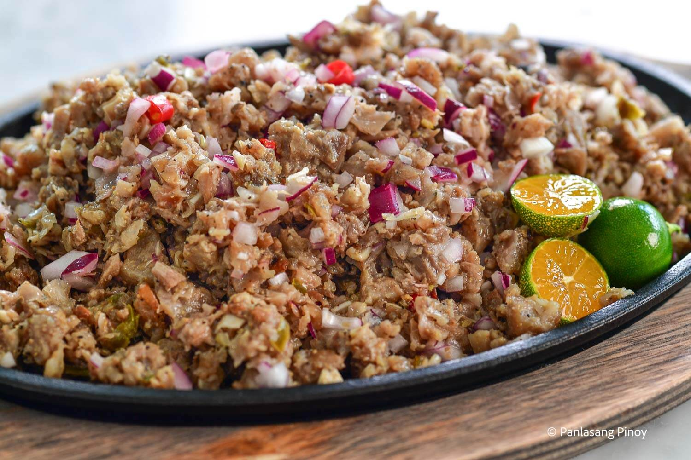

Sisig recipe

Pork Sisig Recipe
It ticks off all the boxes I mentioned earlier with its rich, salty and meaty taste. That, and it is the perfect dish to have with drinks for when you want to gather with friends and family. Just a heads up that you will be needing a grill for this recipe.
Find out what you need to work with in terms of ingredients by reading below!
Ingredients
- 2 kg whole pork liempo (lechon kawali cut)
- 1 tbsp rock salt
- 2 pcs onion, cut into wedges
- water, enough to cover pork
- canola oil (for deep frying)
- 2 tbsp chopped garlic
- 1/2 kg chicken liver, cut into small cubes
- 1 cup chopped onions
- 3 -4 pcs green chillies, sliced
- 2 -4 tbsp Knorr Seasoning
- 2 tbsp calamansi juice
- ground black pepper to taste
Directions
- Let's begin by getting a pot and filling it with water then add salt,
onion wedges and the pork belly or lechon kawali. Cook until tender.
Drain from the water and set aside on a plate or tray to cool and air-dry.
- Get a shallow pan and make it nice and hot. Pour enough oil and deep fry
tenderized pork until crisp and golden brown. Let cool and chop coarsely.
- Using another pan, throw in the garlic and liver. Saute until fully cooked.
- Off heat, toss in the onions, chopped crispy pork and green chillies.
Season with more Knorr Liquid Seasoning, calamansi juice and pepper.
And that's it! Prepare to eat more than usual for you will find yourself
falling in love with the goodness of this Crispy Sisig!